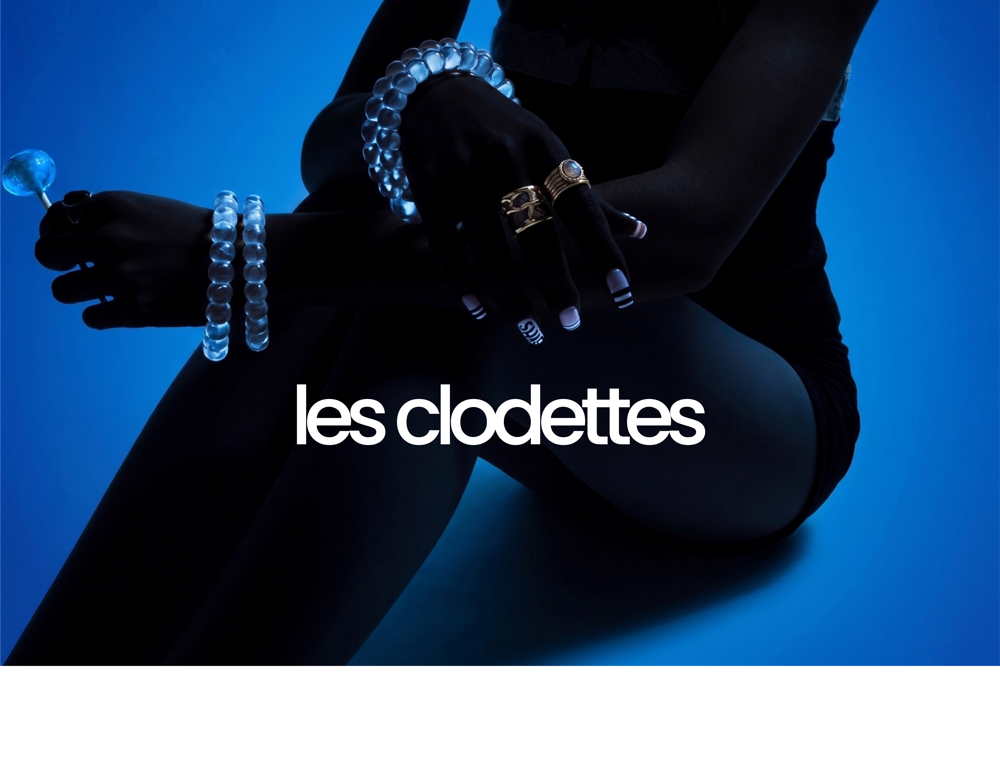
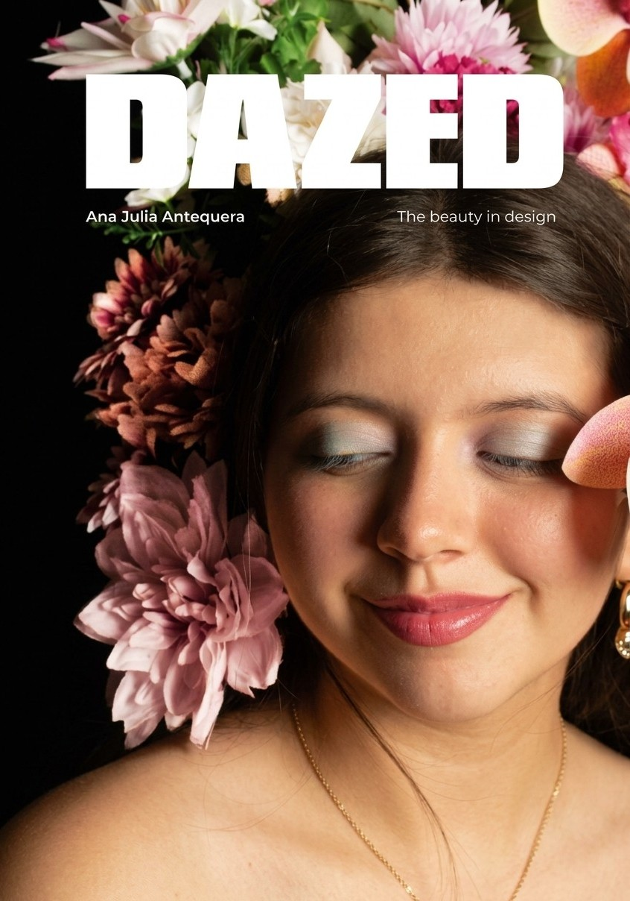
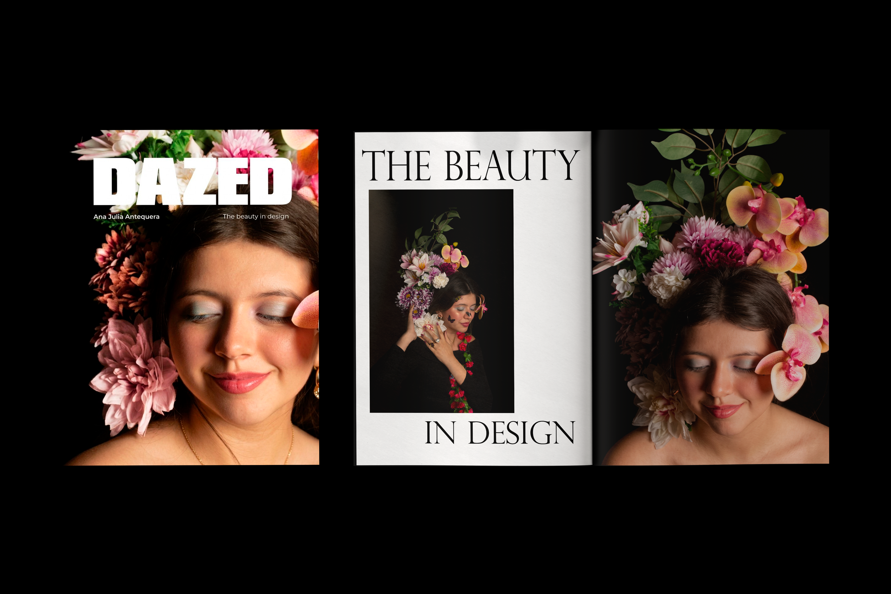
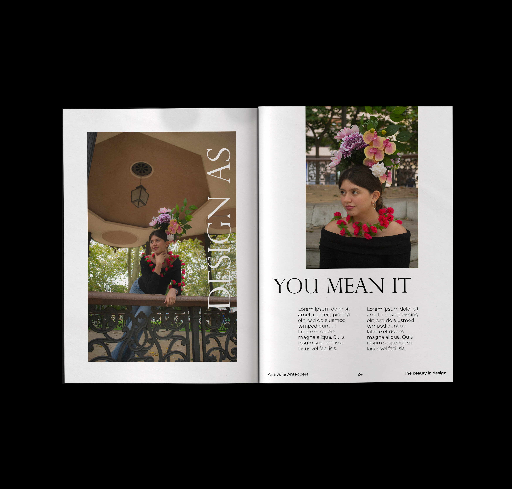
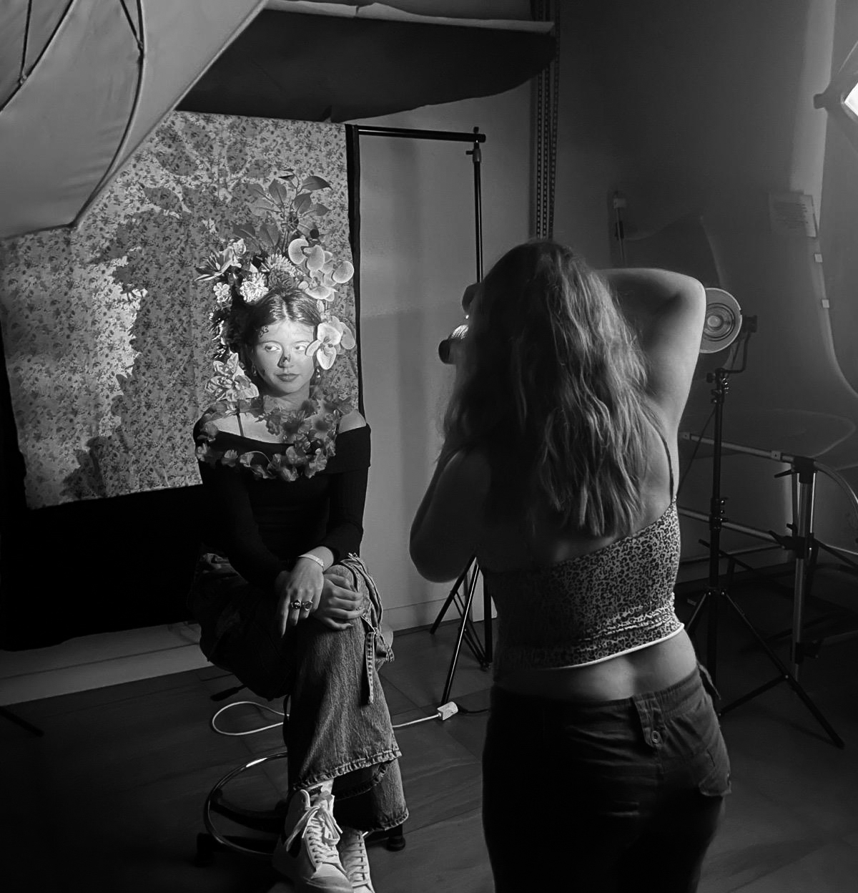

Editorial fotográfica - Portada de revista Dazed
Para este proyecto de una portada ficticia de la revista Dazed, se desarrolló un mundo onírico basado en el imaginario de artistas como Cecil Beaton, Leonora Carrington o Frida Kahlo. Experimentando con los elementos florales, se creó un tocado, que daría vida a la idea de un florecimiento personal, en este caso para mostrar el nacimiento de una nueva diseñadora.


Portada de la revista junto con las primeras páginas del artículo.

Tercera y cuarta página del artículo.

Making off de las fotografías.